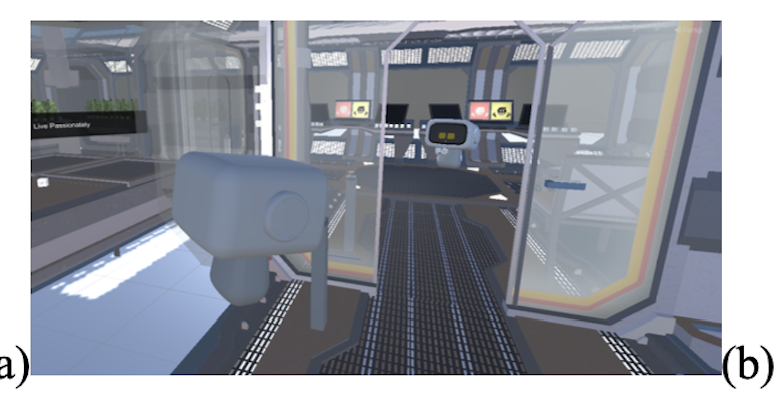

About Me
I am a Computer Science graduate from the University of Nottingham Ningbo China (UNNC), focusing on the intersection of computer vision, biomedical imaging, and AI.
Education
-
University of Nottingham Ningbo China (UNNC)
B.Sc. in Computer Science with Artificial Intelligence (First Class Honours)
2020 – 2024
Projects

IoT-based Health Monitoring System for Elderly Users
Smart Medicine Lab, University of Nottingham Ningbo China
Poster: Poster PDF
Software Copyrights:

Virtual Reality Cybersickness Real-Time Detection and Feedback System
Intelligent Human-centered Innovation Lab, University of Nottingham Ningbo China
Papers:
- Effects of Social Interaction on Virtual Reality Cybersickness (Acknowledgment Mention)
- The Efficacy of Biofeedback in Monitoring VR Cybersickness in the Context of Remote Collaboration (Fourth Author, Under Review at IEEE TVCG)
Software Copyright:
Publications

MambaVesselNet: A Hybrid CNN-Mamba Architecture for 3D Cerebrovascular Segmentation
Yanming Chen et al.
ACM Multimedia Asia 2024

Multi-Modality Semi-Supervised Learning for Ophthalmic Biomarkers Detection
Yanming Chen et al.
IWAIT 2024